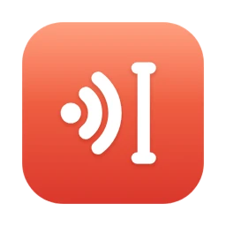

yaz turns your speech into text at the cursor, in any app. Turkish by default, with the English terms a developer says in it spelled right. Whisper runs on your Mac's Neural Engine. Nothing is uploaded.
A replay of a measured run: fixtures/t2.wav, transcribed in 506 ms on an M4 Pro. Hold the key (or Option) to play it. A tap shorter than 0.35 s is dropped, as in the app.
What it does
yaz started from parrot's skeleton and adds the three things a Turkish-speaking developer needs: a multilingual default, insertion that does not drop characters, and clean-up after transcription.
English terms, spelled right
Whisper writes plain Turkish well, but the English inside it comes out as Turkish phonetics. yaz repairs those words from your own vocabulary, deterministically, and keeps the Turkish suffix on them.
Whisper heard
yaz writes
Score
Sılacık
Slack
0.749
Puhrıkı Esti'de
pull request'de
0.832
C.I.P. eline
CI pipeline
0.799
It can only write words you put in the list, and a corpus of 30 ordinary Turkish sentences sets every threshold: none of them changes.
Wrong text is worse than none
A tap shorter than 0.35 s or a silent recording never reaches the model. After it, the decoder's own signals catch invented text and repeat loops. An optional voice detector drops a fan, typing or a cough.
Lands at your cursor
yaz pastes instead of typing key by key, so Slack, Notion, VS Code and Cursor get the whole sentence. Whatever was on your clipboard comes back, unless you copied something newer.
Clean, if you want
Turkish filler sounds go in 1 ms. Apple's on-device model can also fix punctuation; yaz rejects its output if it summarises, adds or drops content.
On your Mac
Whisper large-v3-turbo on the Neural Engine. The history keeps text only, never audio. No account, no analytics.
Measured, not claimed
Every number comes from the audio in fixtures/, so you can run it again with yaz transcribe.
5.6 s of speech
506 ms
12.1 s of speech
855 ms
Resident memory
~250 MB
The app
14 MB
M4 Pro, 24 GB, macOS 26.5, whisper large-v3-turbo. The model (1.6 GB) downloads on first use and compiles once for the Neural Engine.
For developers
One JSON file, a CLI for everything the menu does, and a hook for what comes after.
Teach it your words
Add the terms you say. A term can carry aliases and its own threshold.
The matcher is deterministic, so every correction can be explained.
yaz vocab test "Sılacık üzerinden yaz"
yaz vocab explain "Slack" "Sılacık"
yaz transcribe --strict --vocabulary fixtures/t2.wav
yaz doctor
Pipe it anywhere
on_transcript runs a command with the text as its only argument, after the paste. Send it to a log, a note or an agent.
Any language Whisper speaks
Set language to en, de or any Whisper code. Term repair and filler removal stay Turkish only: their guards are Turkish word lists, and in another language they would protect nothing.

Download yaz
One disk image for Apple silicon Macs running macOS 26 or later.
Open yaz. It lives in the menu bar, with no Dock icon.
Allow Accessibility and Input Monitoring. yaz needs both: one to paste, one to see the key.
Hold fn and speak. The first time, the model downloads (1.6 GB), with progress in the menu.
From version 0.2, yaz checks for updates once a day and asks before installing one.
Check the download
Compare the checksum with this one:
loading…
# checksum
shasum -a 256 ~/Downloads/yaz.dmg# who signed it
spctl --assess --type execute --verbose /Applications/yaz.app
# the latest release, as JSON
curl -s https://yaz.mike4.dev/downloads/latest.json
Releases are signed with Developer ID XMCHPUCJS2. Updates are also signed with an update key, so a changed file is refused.
Prefer the source? github.com/mikeowski/yaz builds with swift build, and scripts/install.sh installs the CLI.
Questions
Does anything leave my Mac?
Your audio and your text, never. yaz makes three kinds of request: the speech model download from Hugging Face on first use, the small voice-detector model if you turn it on, and a daily update check to yaz.mike4.dev. There is no account and no analytics.
Why two permissions?
Accessibility lets yaz paste at your cursor. Input Monitoring lets it see the push-to-talk key. With only the first, the key listener starts and never receives a press, so yaz asks for both and yaz doctor reports both.
The fn key does nothing.
macOS keeps the globe key for itself when a second keyboard layout or Dictation is on. Set System Settings → Keyboard → "Press 🌐 key to" → Do Nothing, or choose use right option in yaz's menu.
Why is the model not in the app?
It would make the app a hundred times larger and keep everyone on one model version. yaz downloads it once, shows the progress in the menu bar, and keeps it in ~/Documents/huggingface.
Does it work in English?
Yes: set language to en. Transcription works in every language Whisper supports. Term repair and filler removal only run on Turkish, by design.
How do I uninstall it?
Quit yaz from its menu and move it to the Trash. To remove everything, also delete ~/.config/yaz, ~/Library/Application Support/yaz and the model in ~/Documents/huggingface.